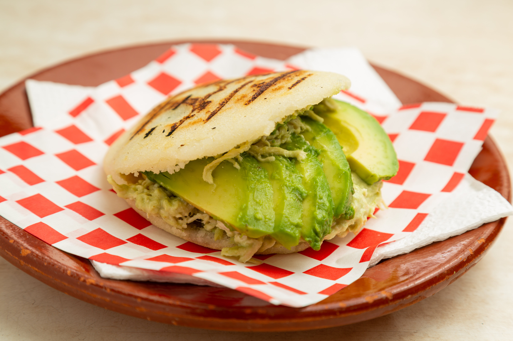

Reina Pepiada

Receta fácil para preparar la famosa arepa reina pepiada en casa. Esta deliciosa arepa venezolana lleva un relleno de pollo con aguacate.
La reina pepiada es la arepa más famosa de Venezuela, sin lugar a dudas.
Es un tipo de arepa asada que se rellena con una mezcla de pollo desmechado, mayonesa,
aguacate majado y en rodajas, cilantro, y especias.
Ingredientes
Para las arepas
- 2 tazas de harina de maíz precocida 290 g
- 2 ¼ de tazas de agua tibia 510 ml
- 1 cucharadita de sal
- 2 cucharadas de aceite
Para el relleno “La Reina Pepiada” de pollo y aguacate:
- 1 pechuga de pollo asada desmechada, 300 g
- 2 ramitas de cilantro
- 1 diente de ajo pequeño
- 1 cebolla mediana 80 g
- 1 aguacate maduro 300 g
- 3 cucharadas de mayonesa
- 1 cucharada de aceite de oliva
- 1 cucharada de limón
- Sal al gusto
Preparación
Para las arepas:
- Coloque el agua tibia en un bol de mezclas. Luego agregue la sal,
y una cucharada de aceite, remueva. Añada la harina revolviendo
constantemente con una cuchara. Amase hasta obtener una consistencia
suave y agradable, sin grumos. La masa se debe despegar fácilmente
del tazón.
- Divida la masa en seis bolas del mismo tamaño y forme las arepas
aplanándolas entre sus manos. Distribuya la cucharada de aceite
restante sobre la superficie de un sartén.
- Encienda la estufa a fuego medio alto, y coloque las arepas a
cocinar tapadas, con suficiente separación entre sí (para poder
voltearlas con facilidad). Cuando hayan pasado los primeros
cinco minutos, voltéelas y cocínelas tapadas otros cinco minutos
del lado contrario. Retírelas y déjelas reposando.
Para el relleno de la Reina Pepiada
- Mientras las arepas se cocinan. Pele el aguacate, reserve al menos
25% del mismo para servir cortado en rodajas dentro de las arepas,
y triture el resto. Corte la otra parte del aguacate en rodajas finas.
Para evitar que el aguacate se ponga negro, puede rociar con algunas
gotas de limón.
- Corte la cebolla y el cilantro, finamente. Triture el diente de ajo.
Coloque los aliños en un bol y mézclelo con el aceite de oliva, el
jugo de limón, la sal y la mayonesa. Vierta el aguacate triturado al
bol con la mayonesa y revuelva hasta que se forme una pasta homogénea.
- Agregue el pollo desmechado. Con una cuchara de madera mézclelo todo.
Pruebe y rectifique sal en caso de ser necesario. Con un cuchillo
afilado, abra las arepas, retire el exceso de masa, y rellene a su gusto.
Recuerde dejar un poco de espacio para colocar algunas rodajas de aguacate.
Otras Recetas